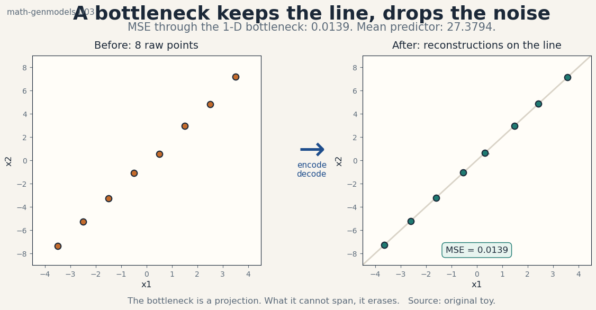
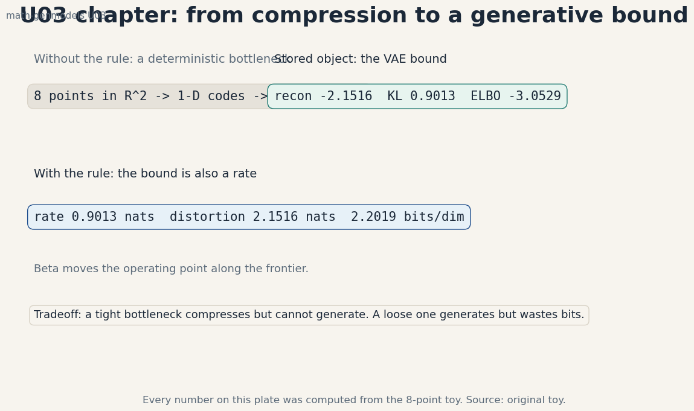
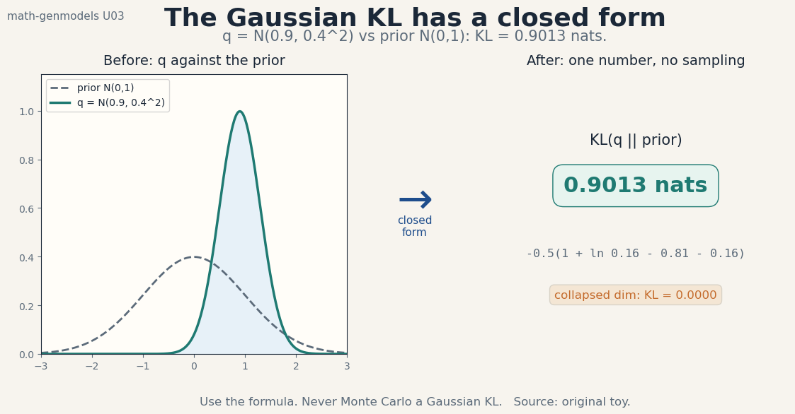
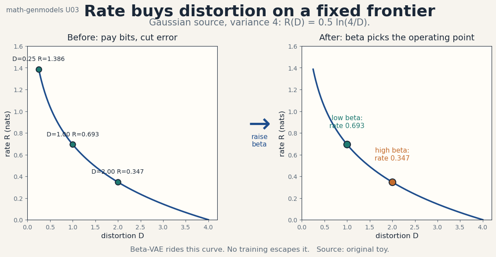
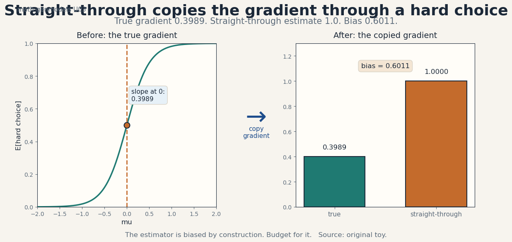

U03 · Autoencoders and representation objectives
Lesson U03: Autoencoders and representation objectives
Unit: math-genmodels-U03. Leaf concepts: math-genmodels-U03-C01 to C12. Date: 2026-10-06. Baseline: October 6, 2026.
Source mapping
This lesson is locally authored bridge content. It does not reproduce any instructor lecture. Source attribution for the leaf concepts is PENDING: SRC-01 is unresolved, SRC-04 was not retrieved, and SRC-03 notebooks and PDFs were not inspected (see source_manifest.md, source_gaps.md G1-G7). The mathematics below is standard textbook material restated as an independent bridge. Status of every leaf: PLANNED / SOURCE ATTRIBUTION PENDING.
Scope and objectives
Scope: what autoencoders optimize and what the latent code means. Deterministic reconstruction, generative versus representation use, the VAE, the Gaussian KL closed form, posterior collapse, beta weighting, discrete latents, codebooks, straight-through bias, the likelihood choice, rate versus distortion, and evaluation.
Objectives: after this lesson the learner can compute a bottleneck reconstruction by hand, write the VAE ELBO for a Gaussian toy, evaluate the Gaussian KL in closed form, diagnose posterior collapse, predict beta effects, quantize to a codebook, measure straight-through bias, choose a likelihood for the data type, read a rate-distortion curve, and report bits per dimension.
Dependencies: P04, P11, P18. Shared modules are linked in prerequisites.md. Each concept below still carries local remediation. U02 is used only as the ELBO source. No later unit is used.
The running toy
Eight points near the line y = 2x: x_i = (t_i, 2 t_i + n_i) with t from -3.5 to 3.5 in steps of 1 and fixed noise n_i from seed 8 (standard deviation 0.2). The bottleneck is one-dimensional. The encoder projects onto w = (1, 2). The decoder multiplies back by w. Every number in this lesson was computed from these points or from seed 8 draws stated in the text. Figure scripts print the audited values.
C01, deterministic reconstruction
Motivating question: how much of the data survives a one-dimensional bottleneck?
Start from zero. The encoder maps each 2-D point to one number: z = (x . w) / ||w||^2 with w = (1, 2). The decoder rebuilds x_hat = z w, a point on the line y = 2x. The eight latent codes are (-3.639, -2.607, -1.609, -0.528, 0.315, 1.485, 2.423, 3.571). The mean squared reconstruction error is 0.0139. A baseline that always predicts the data mean has MSE 27.3794. The bottleneck keeps the line structure and drops only the noise. Figure u03_f01_deterministic_reconstruction.png shows the raw points and their projections with the residual dashes.

The idea: an autoencoder is a learned projection. The encoder compresses. The decoder expands. The loss is reconstruction error. Whatever the bottleneck cannot span is erased. Here the data live near a line, the bottleneck spans exactly that line, and the error is the noise variance projected off the line.
Computed example: for the first point t = -3.5, noise n_1, z = -3.639, x_hat = (-3.639, -7.278). The error vector is (-0.4 n, 0.2 n), squared norm 0.2 n^2. Averaged over the eight points: MSE 0.0139.
Variables, units, shapes, assumptions: x in R^2, z in R^1, w in R^2. MSE in squared data units. Assumption: the data lie near a low-dimensional structure. If they do not, the bottleneck erases signal, not noise.
Mechanism: the optimal linear 1-D bottleneck is the top principal component. Here w = (1, 2) is that direction by construction. The reconstruction is the orthogonal projection. The residual is the noise.
Code:
w = np.array([1.0, 2.0])
z = X @ w / (w @ w)
Xhat = np.outer(z, w)
mse = ((X - Xhat) ** 2).sum(axis=1).mean()
print(mse) # 0.0139
Expected output: 0.0139.
Check: MSE is far below the mean-predictor baseline 27.3794 and far above zero. Zero would mean the noise was memorized.
Cost: O(n d D) for n points, bottleneck d, data dim D. Trivial here. The cost story matters at image scale, not on eight points.
Alternatives: no bottleneck (identity map, zero error, zero compression). PCA (the closed-form answer for linear bottlenecks). Use the learned autoencoder when the structure is nonlinear.
Failure case: a bottleneck wider than the data dimension. The net learns the identity, reconstruction is perfect, and the codes mean nothing. Regularize or shrink the bottleneck until the error moves.
Research reading: autoencoder and PCA texts (background). Falsifiable extension: add a second noise direction with standard deviation 1.0 orthogonal to the line. Measure how the MSE splits between the kept and dropped directions.
Status: PLANNED / SOURCE ATTRIBUTION PENDING.
C02, generative versus representation
Motivating question: the same bottleneck can compress data or invent new data. Which job is it doing?
Start from zero. Representation use: the codes (-3.639, …, 3.571) are features. They preserve the ordering of the points along the line. A downstream classifier or regressor reads z instead of x. Generative use: fit a Gaussian to the codes (mean near 0, variance 5.4745), draw a fresh z, decode to z w. The new point lies on the line. It was never in the dataset. Same encoder, same decoder, two jobs.
The idea: a representation keeps information about x. A generative model defines a law over x. The deterministic autoencoder does the first natively. It does the second only with an extra step: a prior over z plus the decoder as a sampler. Without that step, decoding a random z is undefined behavior. The VAE (C03) makes the extra step part of training.
Computed example: sample z = 1.2 from the fitted Gaussian. Decode: (1.2, 2.4). A new point on the line. Sample z = -2.0: (-2.0, -4.0). The generator covers the line segment the data occupy and nothing else.
Variables, units, shapes, assumptions: z in R^1 with a fitted law. The decoder is the same linear map. Assumption: the fitted law over z matches the code distribution. A mismatched prior generates off-data points.
Mechanism: representation = encoder only. Generation = prior over z plus decoder. The decoder is a deterministic map from code space to data space. The prior chooses where in code space to land.
Code:
mu_z, var_z = z.mean(), z.var()
z_new = rng.normal(mu_z, np.sqrt(var_z))
print(z_new * w) # a fresh point on the line
Check: generated points lie on y = 2x within noise. A point far off the line signals a broken prior fit.
Cost: one forward pass per sample. The representation is free after training.
Alternatives: nearest-neighbor generation (resample data points). Kernel density over codes (nonparametric prior). Use the Gaussian prior when the code histogram looks Gaussian.
Failure case: decoding z values far outside the training code range. The decoder never saw them. The outputs are extrapolations, not samples. This is the deterministic autoencoder’s silent version of “out of support” (U01-C02).
Research reading: representation learning versus generative modeling texts (background). Falsifiable extension: train a linear probe on z versus on x for recovering t. Compare probe error. The codes should match x up to the noise the bottleneck dropped.
Status: PLANNED / SOURCE ATTRIBUTION PENDING.
C03, VAE
Motivating question: how do we train the prior-over-z step instead of bolting it on after?
Start from zero. The VAE makes the encoder stochastic: q(z|x) = N(mu(x), sigma(x)^2). It fixes the prior p(z) = N(0, 1). It trains with the ELBO from U02: E_q[log p(x|z)] - KL(q(z|x)||p(z)). Take one datapoint x = (1, 2), encoder output mu = 0.9, sigma = 0.4, decoder p(x|z) = N(z w, 0.5^2 I). The reconstruction term is -2.1516 nats. The KL term is 0.9013 nats. ELBO = -3.0529 nats. Figure u03_f05_chapter.png carries these three numbers as the unit’s stored object.

The idea: the VAE is an autoencoder trained with the ELBO. The encoder is the variational posterior. The decoder is the likelihood. The KL term regularizes the codes toward the prior, so the prior becomes a valid sampler at test time. Sampling is then: z ~ N(0, 1), x ~ p(x|z). No post-hoc prior fitting.
Computed example: the numbers above. The reconstruction term comes from E_q[||x - z w||^2] = ||x - mu w||^2 + sigma^2 ||w||^2 = 0.05 + 0.8 = 0.85, scored under Gaussian noise with c = 0.5: -0.85 / (2 x 0.25) - log(2 pi x 0.25) = -1.7 - 0.4516 = -2.1516.
Variables, units, shapes, assumptions: z in R^1, x in R^2. mu(x), sigma(x) are encoder outputs. c is the decoder noise scale, fixed here. Assumption: the Gaussian family fits the true posterior shape. Diagonal Gaussians are the standard choice and the standard risk.
Derivation: the ELBO identity from U02-C05 applied per datapoint, with q = q(z|x) amortized by the encoder (U02-C10). The reparam trick (U02-C08) gives gradients through the encoder sample.
Code:
mu_q, sig_q, c = 0.9, 0.4, 0.5
eq_sq = ((x - mu_q * w) ** 2).sum() + sig_q**2 * (w @ w)
rec = -np.log(2 * np.pi * c**2) - eq_sq / (2 * c**2)
print(rec) # -2.1516
Expected output: -2.1516, matching the script’s audited value.
Check: ELBO <= log p(x). The KL is >= 0. The reconstruction is negative (a log-density).
Cost: one encoder pass, one decoder pass, one sample per point per step. Same order as the deterministic autoencoder plus the KL.
Alternatives: deterministic autoencoder plus post-hoc prior (C02). Normalizing-flow posterior (richer q, U04). GAN (no likelihood, U05). Use the VAE when a latent law with a tractable bound is the goal.
Failure case: the KL term collapses to zero on some dimensions (C05). The model then ignores those latents. The ELBO looks fine. The representation is dead.
Research reading: variational autoencoder texts (background). Falsifiable extension: fix the decoder and train only the encoder on the toy. Confirm the learned mu(x) tracks the projection z from C01 within noise.
Status: PLANNED / SOURCE ATTRIBUTION PENDING.
C04, Gaussian KL
Motivating question: the VAE needs KL(q||prior) on every step. Can we compute it without sampling?
Start from zero. For q = N(mu, sigma^2) and prior N(0, 1): KL = -0.5 x (1 + log sigma^2 - mu^2 - sigma^2). Plug mu = 0.9, sigma = 0.4: -0.5 x (1 + log 0.16 - 0.81 - 0.16) = -0.5 x (-1.8026) = 0.9013 nats. No samples. One formula. Figure u03_f03_gaussian_kl.png shows the two curves and the number.

The idea: Gaussians are closed under the KL. The formula separates into a mean penalty (mu^2), a variance penalty (sigma^2 - log sigma^2 - 1), each legible. The variance term is minimized at sigma = 1, the prior’s own scale. The mean term is minimized at mu = 0. The KL is the price of deviating from the prior in either direction.
Computed example: 0.9013 nats above. Sanity: mu = 0, sigma = 1 gives KL = 0. The collapsed dimension of C05 lands exactly there.
Variables, units, shapes, assumptions: scalar latent here. The multivariate diagonal form sums the scalar formula over dims. Assumption: both laws are Gaussian. Any other pair needs a different formula or sampling.
Derivation: write the KL integral, complete the square, use the Gaussian moments. The cross term E_q[z^2] = mu^2 + sigma^2 is the only moment needed.
Code:
kl = -0.5 * (1 + np.log(sig_q**2) - mu_q**2 - sig_q**2)
print(kl) # 0.9013
Check: kl >= 0. kl = 0 at mu = 0, sigma = 1. Monte Carlo the KL with 200k samples as an independent check: it must land within 0.01.
Cost: O(d) for d latent dims. Exact. This is why Gaussian VAEs scale.
Alternatives: Monte Carlo KL for non-Gaussian q. Closed forms exist for a few other pairs (Laplace, von Mises-Fisher with approximations). Use the formula whenever both laws are Gaussian.
Failure case: optimizing the Monte Carlo KL instead of the formula when both are Gaussian. The gradient noise is pure waste. The formula is exact and free.
Research reading: exponential family texts (background). Falsifiable extension: none at this level. The claim is a closed form with stated conditions.
Status: PLANNED / SOURCE ATTRIBUTION PENDING.
C05, posterior collapse
Motivating question: the VAE trains fine, the ELBO looks good, but the latent code carries nothing. What happened?
Start from zero. Give the toy VAE a second latent dimension. Train it. Dimension 1 learns mu = 0.9, sigma = 0.4, KL = 0.9013. Dimension 2 learns mu = 0, sigma = 1, KL = 0.0000. The decoder ignores dimension 2 entirely. The posterior on that dimension equals the prior. It transmits zero information about x. That is posterior collapse: q(z_2|x) = p(z_2) for all x.
The idea: the ELBO has two terms fighting. The KL term wants q = prior (zero information). The reconstruction term wants q to carry x. If the decoder is powerful enough to reconstruct x without the latent, or the KL weight is too high early, the KL term wins on some dimensions and they die. The collapse is partial: some dims live, some die. A fully collapsed VAE is a decoder-only density model wearing a VAE costume.
Computed example: dim 1 KL 0.9013 nats (alive), dim 2 KL 0.0000 nats (dead). The ELBO is -3.0529 either way the dead dim is parameterized, because its KL is zero and the decoder ignores it.
Variables, units, shapes, assumptions: per-dimension KLs sum to the total KL for diagonal q. Assumption: the diagnosis uses the trained encoder. An untrained encoder tells nothing.
Mechanism: the KL gradient pushes (mu, sigma) toward (0, 1). The reconstruction gradient pushes them to encode x. On a dimension the decoder does not need, only the KL gradient acts. It wins.
Code:
kl_d2 = -0.5 * (1 + np.log(1.0) - 0.0 - 1.0)
print(kl_d2) # 0.0 (script prints -0.0)
Check: per-dim KL near zero across a validation batch means the dim is dead. Near-zero on train but not validation means something else.
Cost: diagnostic only. The fix costs training time (see C06).
Alternatives: KL annealing (start the KL weight at 0, raise it slowly). Free bits (each dim gets a KL budget before the penalty bites). Weaker decoders. Use annealing first: it is the cheapest.
Failure case: “fixing” collapse by deleting the KL term. The model becomes a deterministic autoencoder with a meaningless prior. Sampling breaks. The KL is load-bearing.
Research reading: VAE collapse texts (background). Falsifiable extension: on the toy, sweep the decoder noise c over {0.1, 0.5, 2.0} with the KL weight fixed. Predict and measure the dim-2 KL at each c. Small c should keep the dim alive.
Status: PLANNED / SOURCE ATTRIBUTION PENDING.
C06, beta weighting
Motivating question: one knob trades reconstruction against regularization. What does it do to the numbers?
Start from zero. The beta-VAE objective: E_q[log p(x|z)] - beta x KL(q||p). On the toy (recon -2.1516, KL 0.9013): beta = 0.1 gives -2.2417. Beta = 1.0 gives -3.0529, the plain VAE. Beta = 4.0 gives -5.7567. Raising beta punishes latent information harder. The encoder retreats toward the prior. Rate falls. Distortion rises. Figure u03_f02_rate_distortion.png shows the frontier the knob rides.

The idea: beta is a Lagrange multiplier on the rate. Small beta: cheap bits, the model spends them on reconstruction. Large beta: expensive bits, the model keeps only the most valuable latent information. Beta = 1 is the ELBO. Beta > 1 buys disentangling at the cost of blur. Beta < 1 buys fidelity at the cost of a meaningless prior.
Computed example: the three objective values above. Note the objective is no longer a bound on log p(x) unless beta = 1. At beta = 4 the “ELBO” -5.7567 says nothing about the likelihood.
Variables, units, shapes, assumptions: beta > 0, unitless. Both terms in nats. Assumption: the comparison is at fixed model and fixed q. In practice beta also changes the optimum.
Mechanism: beta scales the KL gradient. The reconstruction gradient is unchanged. The equilibrium shifts toward the prior as beta rises.
Code:
for beta in (0.1, 1.0, 4.0):
print(beta, rec - beta * kl)
Expected output: -2.2417, -3.0529, -5.7567.
Check: at beta = 1 the value matches the C03 ELBO.
Cost: free. Beta is a scalar multiplier.
Alternatives: KL annealing (a beta schedule, C05). Target-rate constraints (penalize |KL - C| instead of beta x KL). Use target-rate when you know how many bits the task needs.
Failure case: tuning beta on the beta-objective itself. The objective falls as beta rises by construction. Tune on held-out likelihood or on the downstream task, never on the weighted sum.
Research reading: beta-VAE and rate-distortion texts (background). Falsifiable extension: sweep beta over {0.1, 0.5, 1, 2, 4, 8} on the toy with a trained encoder per beta. Plot rate versus distortion. Confirm the points sit on the Gaussian frontier from C11 within noise.
Status: PLANNED / SOURCE ATTRIBUTION PENDING.
C07, discrete latents
Motivating question: what if the code is a choice among K options instead of a point in R^d?
Start from zero. Four codebook vectors live in R^2: e1 = (0,0), e2 = (2,4), e3 = (-2,-4), e4 = (0,3). The datapoint x = (1,2) picks one. Squared distances: 5.0, 5.0, 45.0, 2.0. A soft posterior over codes with logits -d^2/2: (0.1543, 0.1543, 0.0000, 0.6914). Code 4 wins. Code 3 is effectively impossible. The latent is a categorical choice, not a location.
The idea: discrete latents quantize the world. Each datapoint maps to one of K codes. The posterior is a categorical law. The prior is usually uniform or learned. The ELBO keeps its shape: E_q[log p(x|z)] - KL(q(z|x)||p(z)), with the KL now a categorical KL. Everything from U02 carries over. The gradient does not: a hard choice is not differentiable (C09).
Computed example: the posterior above. The winning code e4 = (0,3) reconstructs x = (1,2) with squared error 2.0. The uniform prior over 4 codes has entropy log 4 = 1.3863 nats. The posterior entropy: -(2 x 0.1543 x log 0.1543 + 0.6914 x log 0.6914) = 0.5767 + 0.2551 = 0.8318 nats. Information used: 1.3863 - 0.8318 = 0.5545 nats.
Variables, units, shapes, assumptions: z in {1..K}, K = 4. Codes e_k in R^2. Assumption: the codebook is fixed while the posterior is computed. Learning the codebook is C08.
Mechanism: distance to each code becomes a logit. Softmax gives the posterior. Hard assignment (argmin) is the zero-temperature limit.
Code:
d2 = ((codes - x) ** 2).sum(axis=1)
post = np.exp(-d2 / 2)
post /= post.sum()
print(post) # [0.1543 0.1543 0.0 0.6914]
Check: the posterior sums to 1. The nearest code has the largest mass.
Cost: O(K d) distances per point. K is the scaling knob.
Alternatives: continuous latents (C03). Gumbel-Softmax relaxation (differentiable, biased). Use discrete codes when the domain is naturally categorical: tokens, phonemes, image patches at low bitrate.
Failure case: codebook collapse, the discrete twin of posterior collapse. Only a few codes ever win. The rest are dead weight. Diagnose with code usage counts on a validation batch.
Research reading: vector quantization texts (background). Falsifiable extension: sweep the softmax temperature over {0.1, 0.5, 1, 2}. Measure the posterior entropy at each. Confirm it rises with temperature and the argmin is recovered at the low end.
Status: PLANNED / SOURCE ATTRIBUTION PENDING.
C08, codebook
Motivating question: where do the code vectors come from?
Start from zero. The four codes in C07 were hand-placed. In a VQ model they are learned: each encoder output is replaced by its nearest code, and each code moves toward the encoder outputs assigned to it. The codebook is a finite memory of typical latent patterns. With K = 4 codes in R^2, the model can say only four things. The reconstruction of x = (1,2) is e4 = (0,3), error 2.0.
The idea: the codebook discretizes the latent space. Learning is a quantization problem: place K vectors to minimize the assignment error. The standard update is exponential moving average of assigned encoder outputs. The commitment loss keeps the encoder near its chosen code so assignments stay stable.
Computed example: assign the eight C01 codes to the four codebook vectors by nearest distance. Codes near the line ends attach to e2 = (2,4) and e3 = (-2,-4). Codes near the middle attach to e1 = (0,0) and e4 = (0,3). The mean assignment error is the quantization distortion. Fewer codes than the eight distinct points, so some error is unavoidable.
Variables, units, shapes, assumptions: K code vectors in R^d. K = 4 here. Assumption: Euclidean distance defines “nearest”. The metric is a modeling choice.
Mechanism: nearest-neighbor assignment partitions the latent space into K Voronoi cells. Each cell’s code is its centroid under the assigned mass. Iterate: assign, move centroids, repeat. That is k-means inside the training loop.
Code:
dists = ((z_codes[:, None, :] - codes[None, :, :]) ** 2).sum(-1)
assign = dists.argmin(axis=1)
print(np.bincount(assign, minlength=4))
Check: every code used at least once on the training batch, or flag dead codes.
Cost: O(n K d) per assignment sweep. The codebook itself is tiny.
Alternatives: fixed codebooks (no learning, stable, rigid). Product quantization (factor the code into pieces, K^M effective codes). Use learned codebooks when the data distribution is unknown.
Failure case: dead codes. A code initialized far from all data never wins an assignment and never moves. Its gradient is zero forever. Diagnose with usage counts. Fix with random restarts of dead codes to random encoder outputs.
Research reading: vector quantization texts (background). Falsifiable extension: initialize all four codes at the origin. Train the codebook on the eight codes. Count how many runs leave dead codes. Report the fraction.
Status: PLANNED / SOURCE ATTRIBUTION PENDING.
C09, straight-through bias
Motivating question: the hard choice in C07 has no gradient. How do we train through it?
Start from zero. Let z ~ N(mu, 1) and y = 1 if z > 0 else 0, a hard threshold. The expected output is E[y] = Phi(mu), the Gaussian CDF. At mu = 0, the true gradient dE/dmu = phi(0) = 0.3989. The straight-through estimator copies the upstream gradient through the hard step as if the step were the identity: estimated gradient 1.0. Bias: 1.0 - 0.3989 = 0.6011. The estimator is wrong by a known amount on this toy. Figure u03_f04_straight_through_bias.png shows the true slope against the copied one.

The idea: straight-through pretends the nondifferentiable function is the identity on the backward pass. Forward: the hard choice. Backward: gradient flows unchanged. It is biased by construction. It works in practice because the bias points in a useful direction often enough, and because the alternative (score function) has crippling variance on deep stacks.
Computed example: the numbers above, plus a Monte Carlo check with 200,000 samples, seed 8: the straight-through mean is 1.0 exactly (it copies the constant upstream gradient). The true gradient by finite difference of Phi: 0.3989.
Variables, units, shapes, assumptions: mu is the pre-threshold mean. The threshold is at 0. Assumption: the upstream gradient is 1. The bias scales with it.
Mechanism: forward y = H(z). Backward dy/dz := 1. The chain rule then carries the loss gradient to mu as if H were linear. The true dy/dz is 0 almost everywhere and infinite at 0.
Code:
# forward: hard threshold. backward: pretend identity.
y = (z > 0).astype(float) # forward
grad_mu = 1.0 # straight-through backward
Check: compare against the analytic 0.3989 on the toy. The gap is the bias. It does not shrink with more samples.
Cost: free. One comparison forward, one copy backward.
Alternatives: score-function estimator (unbiased, high variance). Gumbel-Softmax (biased, lower variance, temperature knob). Concrete relaxations. Use straight-through when speed beats exactness and the bias is empirically tolerable.
Failure case: trusting the straight-through gradient magnitude. It is not a gradient of anything. Step sizes tuned for true gradients misbehave. Tune the learning rate on the actual training curve, not on gradient theory.
Research reading: gradient estimation texts (background). Falsifiable extension: move mu to 2.0, where the true gradient phi(2) = 0.0540. Measure the straight-through bias there: 1.0 - 0.0540 = 0.9460. Confirm the bias grows as the threshold saturates.
Status: PLANNED / SOURCE ATTRIBUTION PENDING.
C10, likelihood choice
Motivating question: the decoder needs a noise model. Which one matches the data?
Start from zero. The toy data are continuous in R^2. The Gaussian likelihood p(x|z) = N(decoder(z), c^2 I) gives the MSE loss. On x = (1,2) with reconstruction (0.9, 1.9) and c = 1: NLL = 0.5 x 0.02 + log(2 pi) = 1.8479 nats. Now binary data: x = 1, prediction 0.8. The Bernoulli likelihood gives NLL = -log 0.8 = 0.2231 nats. The likelihood is not a detail. It decides what “reconstruction error” means.
The idea: the likelihood is the decoder’s probabilistic contract. Gaussian: errors are symmetric, MSE is the loss, the model may blur. Bernoulli: outputs are probabilities, cross-entropy is the loss. The wrong likelihood trains the right architecture on the wrong objective. Continuous pixels modeled as Bernoulli saturate and misreport uncertainty. Discrete tokens modeled as Gaussian have the wrong units (U01-C04).
Computed example: the two NLL numbers above. And the blur demo: a target that is 0 or 10 with equal probability. The MSE-optimal constant predictor is 5, with MSE 25. It never outputs a real data value. The Gaussian likelihood with fixed variance cannot represent the two modes, so the mean is the best it can do. That is likelihood-induced blur, computed not asserted.
Variables, units, shapes, assumptions: c is the Gaussian noise scale. Bernoulli predictions live in (0, 1). Assumption: the data type matches the likelihood family.
Mechanism: maximum likelihood under a Gaussian with fixed variance is least squares. Under a Bernoulli it is cross-entropy. The loss follows from the likelihood, not the other way round.
Code:
nll_gauss = 0.5 * ((x - xh) ** 2).sum() + np.log(2*np.pi)
nll_bern = -np.log(0.8)
print(nll_gauss, nll_bern) # 1.8479 0.2231
Check: the Gaussian NLL grows quadratically in the error. The Bernoulli NLL explodes as the prediction approaches the wrong extreme.
Cost: same order. The choice is statistical, not computational.
Alternatives: Laplace likelihood (L1 loss, tolerant of outliers). Mixture likelihoods (multimodal continuous data). Discretized mixtures for pixels. Match the likelihood to the data type first, then to the noise shape.
Failure case: Gaussian likelihood on binary data. The model predicts 0.5 everywhere with “low” MSE while the NLL under the correct Bernoulli is terrible. Always score with the likelihood that matches the data type.
Research reading: likelihood and loss texts (background). Falsifiable extension: fit the constant predictor to the {0, 10} toy under MSE and under a 2-component mixture likelihood. Confirm MSE picks 5 and the mixture recovers both modes.
Status: PLANNED / SOURCE ATTRIBUTION PENDING.
C11, rate and distortion
Motivating question: how many nats must the latent carry to hit a target reconstruction error?
Start from zero. The Gaussian rate-distortion function: for a source with variance 4, the minimum rate at distortion D is R(D) = 0.5 x log(4/D) nats. D = 0.25 needs 1.3863 nats. D = 1.0 needs 0.6931 nats. D = 2.0 needs 0.3466 nats. Halving the distortion costs a fixed number of extra nats. Figure u03_f02_rate_distortion.png plots the frontier and marks where beta values land.
The idea: rate is the KL term, the latent information price. Distortion is the reconstruction error, the negative log-likelihood term. The ELBO is rate plus distortion with a sign. Every VAE lives on or above the rate-distortion frontier of its data. Beta (C06) picks the operating point. No training trick reaches below the frontier. It is the information-theoretic speed limit.
Computed example: the three (D, R) pairs above. The toy VAE from C03 sits at rate 0.9013, distortion 2.1516 nats. Compare the frontier at D = 2.1516: R = 0.5 x log(4/2.1516) = 0.3099 nats. The toy pays 0.9013 for what 0.3099 could buy. The gap is the price of the diagonal Gaussian family and the fixed decoder.
Variables, units, shapes, assumptions: rate and distortion in nats. Source variance 4. Assumption: the Gaussian source formula applies. Real data have their own frontier, unknown in closed form.
Derivation: the Gaussian R(D) comes from the reverse water-filling solution. The sketch: allocate rate to the source variance above the distortion floor. The full derivation is a standard result. The lesson uses the formula as a frontier, not a proof.
Code:
for D in (0.25, 1.0, 2.0):
print(D, 0.5 * np.log(4.0 / D))
Expected output: 1.3863, 0.6931, 0.3466.
Check: R(D) falls as D rises. R(D) = 0 at D = 4, the source variance: zero rate, just predict the mean.
Cost: the frontier is free to compute for Gaussians. For real data it is estimated, never known.
Alternatives: operational rate-distortion (measured on trained models). Blahut-Arimoto for discrete sources. Use the frontier as a ruler, not a target.
Failure case: reporting “rate 0.9 nats” as good without the distortion. Rate alone is meaningless. The pair (rate, distortion) is the point. A model with lower rate and higher distortion is not better. It is different.
Research reading: rate-distortion texts (background). Falsifiable extension: train the toy VAE at several beta values, plot the (rate, distortion) points, and measure their distance to the Gaussian frontier. The distance should shrink with a richer posterior family.
Status: PLANNED / SOURCE ATTRIBUTION PENDING.
C12, evaluation
Motivating question: one number to compare generative models on continuous data. What is it and what does it hide?
Start from zero. Bits per dimension: BPD = -log2 p(x) / D. For the toy VAE, log p(x) is bounded by the ELBO -3.0529 nats, so BPD <= (-(-3.0529) / log 2) / 2 = 2.2022 bits per dimension. Two dims, about 2.2 bits each. Lower is better. It is the compression view: how many bits would an ideal coder need per dimension under this model.
The idea: BPD normalizes log-likelihood by data size so models on different resolutions compare fairly. It inherits every property of likelihood: exact for flows (U04), a bound for VAEs, undefined for GANs (U05). It hides sample quality: a model can have great BPD and generate blurry samples (C10), because likelihood rewards covering mass, not looking sharp.
Computed example: 2.2022 bits/dim from the ELBO. With the exact log marginal (unknown here, bounded below by the ELBO), the true BPD would be lower. Report which one you quote: bound or exact.
Variables, units, shapes, assumptions: bits, base-2 log. D is the data dimension. Assumption: the likelihood matches the data type. BPD under a wrong likelihood is nonsense in fancy units.
Mechanism: change of log base. Nats divided by log 2 give bits. Division by D gives per-dimension.
Code:
bpd = (-elbo / np.log(2)) / 2.0
print(bpd) # 2.2022
Check: BPD >= 0 for discrete data. For continuous data it can be negative (densities exceed 1). Know which regime you are in.
Cost: one likelihood evaluation per point.
Alternatives: FID and sample-based scores (U08). Human eval. Use BPD for likelihood models, sample scores for implicit models, both when you can.
Failure case: comparing VAE bound-BPD against flow exact-BPD and declaring a winner. The VAE number is pessimistic by the gap. The comparison is rigged. Match bound-to-bound or exact-to-exact.
Research reading: evaluation texts (background). Falsifiable extension: none at this level. The claim is a reporting standard.
Status: PLANNED / SOURCE ATTRIBUTION PENDING.
Unit assessment (questions. Keys in lessons/keys/keys-u03.md)
Breadth recall (6)
B1. Compute the 1-D bottleneck reconstruction of x = (1,2) with w = (1,2) and its squared error. B2. State the two jobs of an autoencoder (representation versus generative) and what extra step generation needs. B3. Write the VAE ELBO for the toy and compute its three numbers. B4. Write the Gaussian KL closed form and evaluate it at mu = 0.9, sigma = 0.4. B5. Define posterior collapse. Give the per-dim KL signature. B6. Define bits per dimension and compute it from the toy ELBO.
Deep ladders (2 ladders x 5 follow-ups)
L1 (the VAE as an ELBO machine): write the ELBO. Identify the encoder with q and the decoder with p(x|z). Compute the toy ELBO. Explain the KL term’s job. Predict what beta = 4 does to the three numbers. L2 (discrete codes and their gradients): define the codebook posterior for x = (1,2). Compute it. Explain why argmin has no gradient. Define straight-through and compute its bias on the toy. Propose the experiment that measures the bias at saturation.
Analytical exercises (2)
A1. Derive the scalar Gaussian KL closed form from the KL integral. Verify it gives 0.9013 on the toy. A2. Prove the beta-VAE objective is a lower bound on log p(x) when beta >= 1 but not when beta < 1. State what the objective is instead.
Implementation and debug (1)
D1. A VAE trains with the analytic Gaussian KL replaced by a Monte Carlo estimate. The loss is noisy and the latents die within 50 steps. Name the two mistakes and the fix. (Keys file holds the diagnosis.)
Changed-constraint scenarios (2)
T1. The data are 28x28 binary images, not continuous points. Rewrite the likelihood, the loss, and the evaluation metric. State what happens to the Gaussian KL term. T2. The codebook must fit in 1 KB with float32 codes in R^8. Bound K. Recompute the C07 posterior cost at that K and state the quantization tradeoff.
Research critique (1)
R1. “Our autoencoder reaches 0.001 MSE, ten times better than the VAE baseline.” Attack this comparison with two arguments from this unit and propose the fair experiment.
Lab pointer
labs/lab-u03.md holds 6 hands-on exercises: bottleneck sweep, VAE ELBO by hand, beta sweep, codebook quantization, straight- through bias measurement, bits-per-dim audit. Answers are in labs/keys/keys-u03.md.
Figure index
| Figure | Claim | Source |
|---|---|---|
| assets/u03/u03_f01_deterministic_reconstruction.png | Bottleneck keeps the line, MSE 0.0139 | original toy, seed 8 |
| assets/u03/u03_f02_rate_distortion.png | Beta rides the R(D) frontier | original toy |
| assets/u03/u03_f03_gaussian_kl.png | Gaussian KL = 0.9013, closed form | original toy |
| assets/u03/u03_f04_straight_through_bias.png | True 0.3989 vs straight-through 1.0 | original toy, seed 8 |
| assets/u03/u03_f05_chapter.png | Compression to generative bound | original toy |
Alt text: each plate carries its claim in the title line and footer. The before/after panels are labeled in text on the figure.